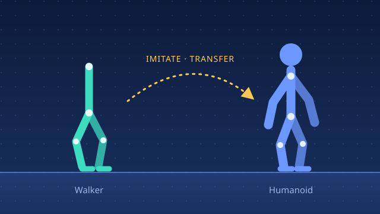
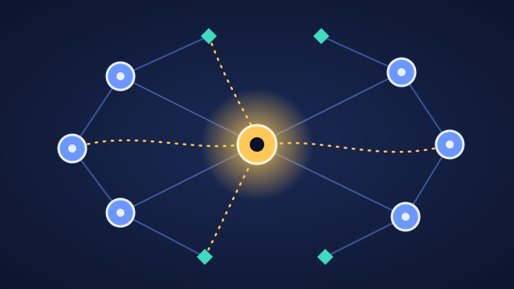
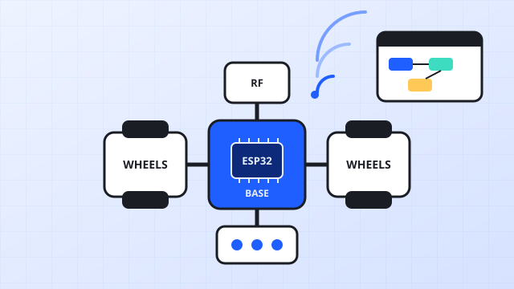
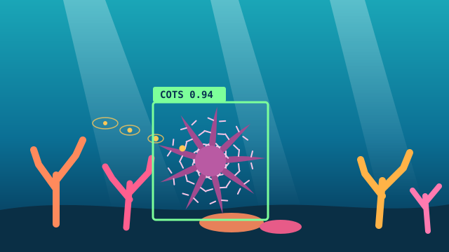

Hi, I'm Francisco. Hola, soy Francisco.
I design and develop autonomous robotic systems. What drives me is to keep learning, tackle complex technical problems and turn ideas into real systems. Diseño y desarrollo sistemas robóticos autónomos. Mi principal motivación es seguir aprendiendo, afrontar problemas técnicos complejos y convertir ideas en sistemas reales.
Featured projectsProyectos destacados

Humanoid controlControl de humanoides
Learning to walk across different body shapes. A policy is first trained on a simple two-legged body, the Walker in MuJoCo; the humanoid then imitates it, using progressive imitation learning and behavioral cloning, and learns to walk with minimal training iterations.Aprender a caminar entre cuerpos de distinta forma. Primero se entrena una política en un cuerpo simple de dos patas, el Walker de MuJoCo; después el humanoide la imita, con aprendizaje por imitación progresivo y behavioral cloning, y aprende a caminar con muy pocas iteraciones de entrenamiento.

Multi-robot mission coordinationCoordinación multirobot de misiones
Cooperation and coordination of multiple robots: task planning and navigation. Control is kept simple; the core is a bio-inspired algorithm built on a continuous latent space and a dynamic graph. It optimises the tasks so that the system returns to its desired state, with no pending tasks, in optimal time and energy.Cooperación y coordinación de varios robots: planificación de tareas y navegación. El control es simple; el núcleo es un algoritmo de inspiración biológica basado en un espacio latente continuo y un grafo dinámico. Optimiza las tareas para que el sistema vuelva a su estado deseado, sin tareas pendientes, en tiempo y energía óptimos.

ModuBot
Personal hardware–software integration project: a modular robot whose software is flashed onto it. You connect over WiFi to the app it serves and control it from there. Underneath, the firmware includes preprogrammed routines that you can run on the robot.Proyecto personal de integración hardware-software: un robot modular con un software que se flashea en él. Te conectas por WiFi a la app que sirve el propio robot y lo controlas desde ahí. Por debajo, el firmware incluye rutinas preprogramadas que puedes ejecutar en el robot.

Coral reef pest detectionDetección de plagas en arrecifes de coral
Early detection of crown-of-thorns starfish, a pest that devours coral on Australia's Great Barrier Reef. A vision algorithm combining YOLO with Kalman filters to analyse underwater video.Detección temprana de la estrella de mar corona de espinas, una plaga que devora el coral en la Gran Barrera de Coral de Australia. Algoritmo de visión que combina YOLO con filtros de Kalman para analizar vídeo submarino.
Technical skillsCompetencias técnicas
Robotics & controlRobótica y control
- ROS 2
- MPC
- PID
- Kalman filter
- MATLAB / Simulink
- RL
Programming & AIProgramación e inteligencia artificial
- Python
- YOLO
- PyTorch
- TensorFlow
- scikit-learn
- SQL
Development & systemsDesarrollo y sistemas
- Git
- Docker
- ESP32
- PLC
- RAPID
CommunicationsComunicaciones
- MQTT
- TCP/IP
- UDP
Experience & educationExperiencia y formación
GMV — Master's Thesis InternshipPrácticas del TFM
July 2026 – present · Tres Cantos, SpainJulio 2026 – actualidad · Tres Cantos, España
Master's thesis on safe reinforcement learning for planning and control. Learning is applied as an additional layer over an existing classical architecture rather than as a replacement, so the guarantees stay where they can be proven. Focus on behaviour under changing and uncertain conditions. Tesis de máster sobre aprendizaje por refuerzo seguro para planificación y control. El aprendizaje se aplica como una capa adicional sobre una arquitectura clásica existente, no como sustituto, de modo que las garantías se mantienen donde se pueden demostrar. Foco en el comportamiento bajo condiciones cambiantes e inciertas.
BIConsulting — Junior Technical ConsultantConsultor técnico junior
2024 – 2025 · Valencia, Spain2024 – 2025 · Valencia, España
- Analysed client infrastructures to define technical requirements for digital transformation and automation projects.Análisis de las infraestructuras de clientes para definir requisitos técnicos en proyectos de transformación digital y automatización.
- Authored technical documentation for R&D grants focused on AI, digital twins and robotics.Redacción de documentación técnica para ayudas de I+D centradas en IA, gemelos digitales y robótica.
EducationFormación
Universitat Politècnica de València (UPV)
Master's degree, Automation and Industrial Computing · Sep 2025 – Jun 2026Máster en Automática e Informática Industrial · sep 2025 – jun 2026
Chalmers University of Technology
Master's degree, Artificial Intelligence · Aug 2023 – Jun 2024Máster en Inteligencia Artificial · ago 2023 – jun 2024
Universitat Politècnica de València (UPV)
Bachelor's degree, Computer Engineering · Sep 2020 – May 2024Grado en Ingeniería Informática · sep 2020 – may 2024
ContactContacto
Open to talk about robotics, control and autonomous systems.Encantado de hablar sobre robótica, control y sistemas autónomos.